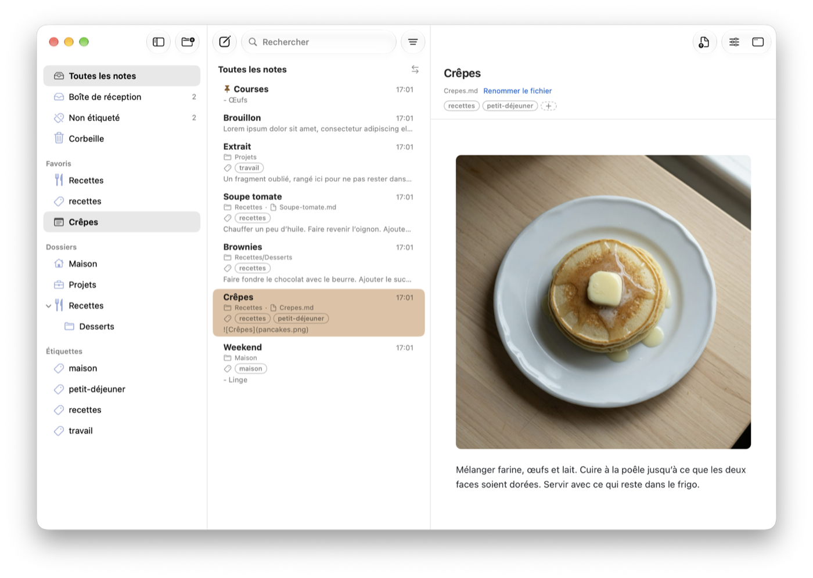
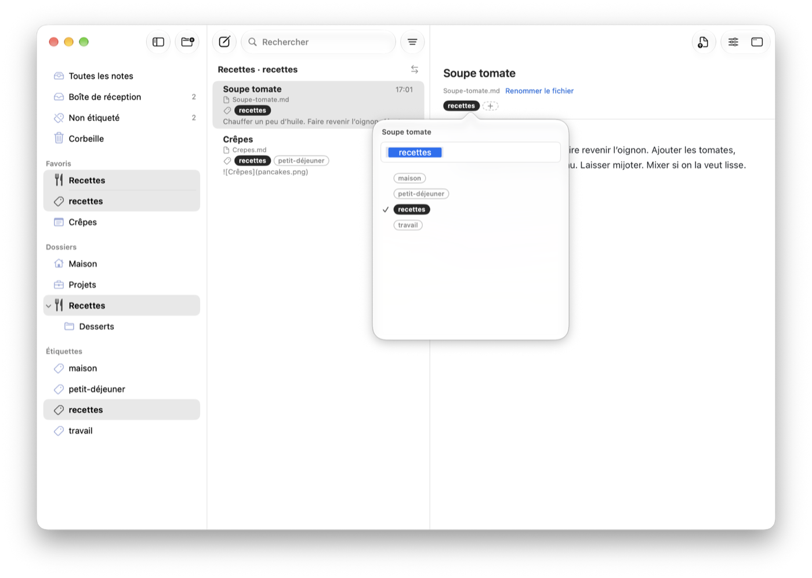
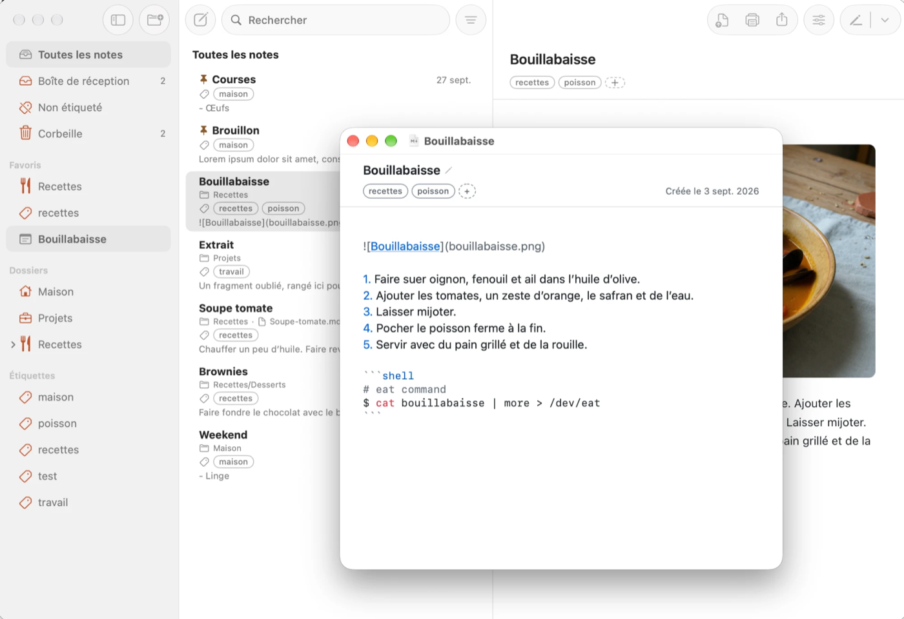
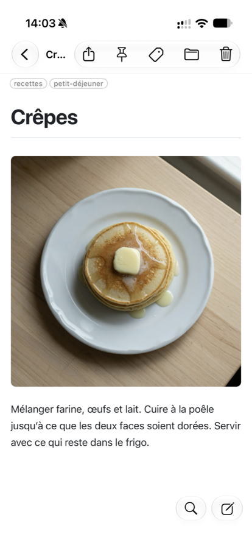
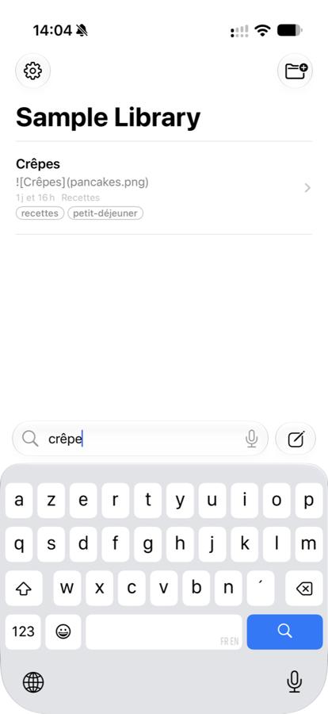
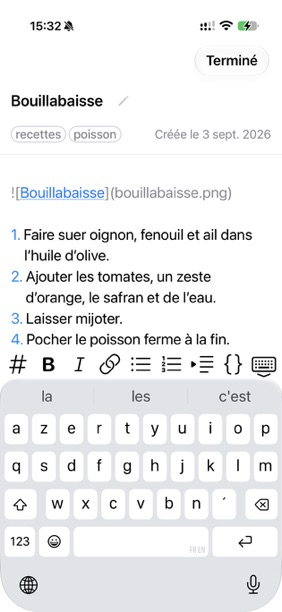
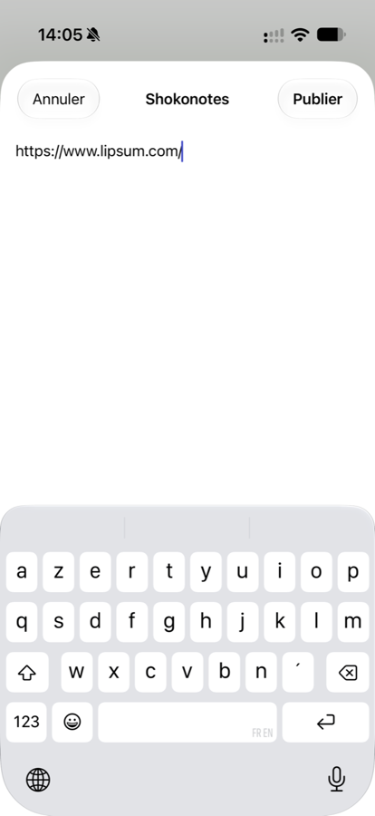
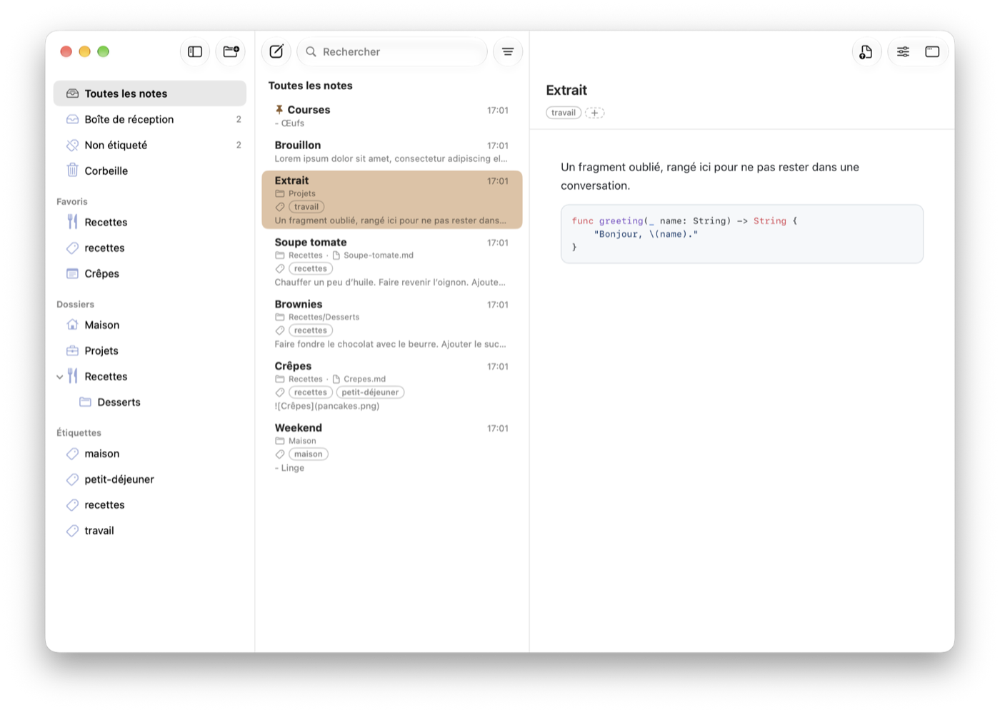

Manuel d'utilisation
Tout ce qu'il faut pour chercher, lire, classer et écrire vos notes. Le même texte est livré dans l'app, dans le dossier Bienvenue.
Lire et chercher
La fenêtre a trois colonnes : dossiers et étiquettes à gauche, la liste des notes au milieu, la note mise en forme à droite.

Se déplacer
- Cliquez sur un dossier pour lister ses notes **et celles de ses sous-dossiers** (un réglage permet de se limiter au dossier lui-même).
- Inbox reçoit les nouvelles notes pas encore classées. **Toutes les notes montre toute la bibliothèque. Corbeille** garde ce que vous avez supprimé jusqu'à ce que vous la vidiez.
- Au clavier : ← et → passent des dossiers à la liste, ↑ et ↓ se déplacent dans une colonne, Espace ouvre ou ferme un dossier.
Chercher
Tapez ⌘F (ou cliquez dans le champ de recherche) puis votre texte. La liste se réduit pendant la frappe, sur les titres et sur tout le texte des notes. Échap efface la recherche.
Une fois une note ouverte, la recherche surligne les mots dedans ; ⌘G va à l'occurrence suivante, ⇧⌘G à la précédente.
Lire ne modifie rien
Sélectionner, parcourir et chercher ne vous mettent jamais en mode édition. Une note ne change que lorsque vous l'ouvrez explicitement pour écrire (voir Prendre des notes).
Épingles et favoris
Épinglez une note pour la garder en haut de sa liste : clic droit, ou balayage de la ligne. Dossiers et étiquettes peuvent devenir favoris depuis leur menu contextuel, et un dossier peut recevoir son propre symbole (clic droit ▸ Choisir un symbole…).
Classer vos notes
Shokonotes propose deux manières de classer, qui se complètent.
Les dossiers
Un dossier est un vrai dossier sur votre disque. Servez-vous-en pour l'endroit où une note a sa place : un dossier par activité, par projet, par pan de vie.
⇧⌘Ncrée un dossier,⌘Rrenomme la note ou le dossier sélectionné.- Glissez une note sur un dossier pour la déplacer, ou un dossier sur un autre. Le trait d'insertion indique le niveau où il atterrira.
- Les dossiers s'imbriquent à volonté.
Les étiquettes
Une étiquette est un mot attaché à une note, stocké dans l'en-tête de la note elle-même (voir plus bas). Une note peut en avoir plusieurs, et les étiquettes traversent les dossiers : une recette peut vivre dans Recettes et porter aussi repas-entre-amis.
⌃⌘Tsur une note ouvre l'éditeur d'étiquettes. Tapez, validez par Entrée ou virgule ; les suggestions viennent de vos étiquettes existantes, pour éviterprojetà côté deprojets.- Cliquez une étiquette dans la barre latérale pour lister toutes les notes qui la portent.

La Corbeille
⌘⌫ envoie les notes sélectionnées à la Corbeille. Une note peut être restaurée à sa place d'origine tant que vous ne videz pas la Corbeille.
À quoi ressemble une note sur le disque
Une note peut commencer par un petit en-tête entre deux lignes --- :
---
title: "Lisez-moi"
tags: [bienvenue]
created: 2026-10-08
---Il est facultatif. Sans lui, le titre est la première ligne de la note (ou le nom du fichier, selon vos réglages) et la note n'a pas d'étiquette. Shokonotes ne réécrit que les lignes qui lui appartiennent : title, tags et created.
Prendre des notes
On écrit dans une fenêtre à part, jamais dans la bibliothèque.
Ouvrir une note pour écrire
Appuyez sur Entrée, double-cliquez une note, ou ⌘N pour une nouvelle. L'éditeur qui s'ouvre se choisit dans Réglages ▸ Général ▸ Ouvrir les notes avec :
- L'éditeur de Shokonotes — un éditeur Markdown discret, avec coloration, continuation des listes et complétion des blocs de code. Le texte est enregistré en continu : il n'y a pas de bouton Enregistrer.
- Une app externe — Typora, VS Code, BBEdit, TextEdit… Shokonotes reprend vos modifications dès que le fichier est enregistré.
⌘O ouvre une note dans l'éditeur choisi, ⌥⌘O dans l'autre. Les deux raccourcis se changent dans les Réglages.
L'éditeur
- Le titre est en haut ; le modifier renomme aussi le fichier : titre et nom de fichier ne font qu'un.
- Les étiquettes et la date de création sont dans une petite barre au-dessus du texte.
⌘Wferme l'éditeur et rend la main à la bibliothèque.- Le texte affiché est le vrai Markdown, symboles compris. Syntaxe Markdown, à côté de ce manuel, montre ce que fait chaque symbole.

Note rapide, de n'importe où
⌃⌥⌘N dans n'importe quelle app : une nouvelle note est créée dans Inbox et s'ouvre dans l'éditeur, sans vous éloigner de ce que vous faisiez. Le raccourci se change dans les Réglages.
Il fonctionne tant que Shokonotes tourne, même fenêtre fermée ou réduite. Pour l'avoir sous la main après chaque redémarrage, activez Réglages ▸ Général ▸ Ouvrir Shokonotes à l'ouverture de session : l'app démarre alors en arrière-plan, sans ouvrir sa fenêtre.
iPhone et synchronisation
Shokonotes n'a ni serveur ni compte. Vos notes voyagent comme n'importe quel fichier : par le service de synchronisation que vous utilisez déjà.
Avec iCloud Drive
- Sur le Mac, gardez votre dossier de notes dans iCloud Drive.
- Sur l'iPhone, ouvrez Shokonotes, touchez Choisir un dossier… et choisissez le même dossier dans iCloud Drive.
L'app iPhone est une compagne : recherche, lecture, et modification d'une note avec le bouton Modifier. Le bouton de rédaction capture une note dans Inbox. Dans Safari ou toute autre app, Partager ▸ Shokonotes enregistre une page ou du texte comme note.




Autres outils de synchronisation
Nextcloud, Syncthing, un dépôt Git, ou rien du tout : sur le Mac, n'importe quel dossier convient. Sur l'iPhone, seuls les dossiers d'iCloud Drive sont pris en charge.
Bon à savoir
- Renommez et classez sur le Mac ; le téléphone sert à capturer et à lire.
- Un dossier que vous n'avez pas mis dans iCloud Drive reste sur votre Mac.
Personnaliser
Ouvrez les Réglages avec ⌘,.
- Général — quel éditeur ouvre les notes, raccourcis locaux et globaux, ce que fait la fermeture de la fenêtre (par défaut l'app continue de tourner avec ses raccourcis globaux), ouverture de Shokonotes à l'ouverture de session, listage des notes des sous-dossiers.
- Stockage — le dossier de notes, le nom des notes sans titre, la gestion des conflits iCloud, l'extension des fichiers.
- Apparence — la barre latérale peut être translucide comme le reste de macOS, ou opaque.
- Aperçu — thème, police et taille de la note mise en forme et de l'éditeur.
Si la fenêtre a disparu
Fermer la fenêtre ne quitte pas Shokonotes. Faites-la revenir avec Fenêtre ▸ Bibliothèque (⌘0), un clic sur l'icône du Dock, ou le raccourci global ⌃⌥⌘S, qui affiche et masque la bibliothèque depuis n'importe quelle app. Quittez avec ⌘Q.
Imprimer, exporter, partager
Les trois boutons en haut à droite d'une note l'impriment, l'exportent en PDF identique à l'aperçu, ou partagent le fichier de la note (Mail, Messages, AirDrop).
Titres et texte
Le Markdown est du texte brut avec quelques symboles. Cette note montre les symboles et ce qu'ils produisent. Ouvrez-la pour écrire (Entrée) et comparez.
Titres
Commencez une ligne par un à six # :
# Titre
## Section
### Sous-sectionEmphase
Écrivez en italique avec une étoile, en gras avec deux, en les deux avec trois, et barré avec deux tildes.
*italique* **gras** ***les deux*** ~~barré~~Paragraphes
Une ligne vide commence un nouveau paragraphe. Un simple retour à la ligne au milieu d'un paragraphe n'est qu'une espace.
Citations
Une ligne qui commence par
>est une citation. Elle peut courir sur plusieurs lignes.
Un trait horizontal
Trois tirets sur une ligne seule tracent un trait :
Listes et tâches
Puces
- Commencez la ligne par
- - Ou par
*- Décalez de deux espaces pour imbriquer
Numérotées
- Premier
- Deuxième
- Troisième
Dans l'éditeur, Entrée à la fin d'un élément de liste ouvre le suivant. Entrée sur un élément vide termine la liste.
Tâches
- ☑ Une tâche terminée
- ☐ Une tâche à faire
- ☐ Une autre
- [x] fait
- [ ] à faireLiens et images
Liens
Le texte entre crochets, puis l'adresse entre parenthèses :
[Shokonotes](https://shokonotes.jcbaptiste.com)Une adresse seule entre chevrons marche aussi : https://example.com
Images
Pareil, avec un point d'exclamation devant. Le chemin est relatif à la note : gardez les images à côté de vos notes.
Pourquoi des chemins relatifs
Vos notes sont de simples fichiers. Si vous déplacez le dossier sur un autre ordinateur, les liens vers des fichiers qu'il contient continuent de marcher car ils ne disent jamais où se trouve le dossier.
Code
Mettez un mot entre accents graves pour du code en ligne.
Pour plusieurs lignes, entourez-les de trois accents graves et nommez le langage. L'aperçu les colore, et l'éditeur aussi.
func saluer(_ nom: String) -> String {
"Bonjour, \(nom) !"
}def saluer(nom):
return f"Bonjour, {nom} !"echo "Bonjour" > bonjour.txtSurvolez un bloc dans l'aperçu pour copier son contenu d'un clic.

Tableaux et citations
Tableaux
Séparez les colonnes par | et tracez la ligne d'en-tête avec des tirets :
| Fruit | Couleur | Saison |
| ------- | ------- | --------- |
| Pomme | Rouge | Automne |
| Cerise | Rouge | Été || Fruit | Couleur | Saison |
|---|---|---|
| Pomme | Rouge | Automne |
| Cerise | Rouge | Été |
Ajoutez deux-points pour aligner : :--- à gauche, :---: centré, ---: à droite.
Citations imbriquées
Une citation
dans une citation
L'en-tête d'une note
Tout en haut d'un fichier, trois tirets peuvent ouvrir un petit en-tête, le front matter. Shokonotes s'en sert pour le titre, les étiquettes et la date de création :
---
title: "Ma note"
tags: [idée, travail]
created: 2026-10-08
---